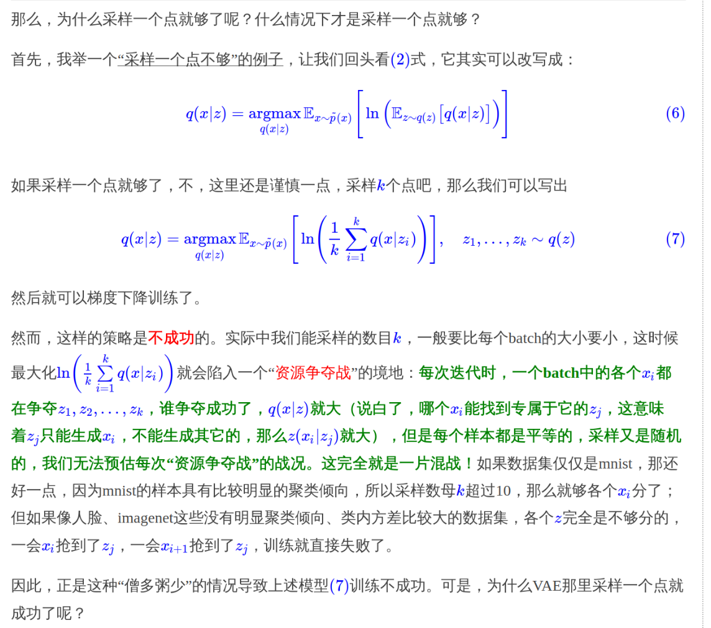

VAE变分自编码器
数值计算vs采样
例如要求解一个期望
\(E(x) = \int x p(x) \mathrm{d}x\)
如果是使用数值计算，则需要选取一系列有代表性的点。 如：\(x_0 < x_1 < x_2 < .... < x_n\)
然后进行计算 \(E(x) \approx \sum_i x_i p(x_i)(x_i - x_{i-1})\)
这里只是有代表性的点，但是这些点并不服从 \(p(x)\) 分布，所以计算的式子中还是需要计算 \(p(x)\)。
采样：就是从\(p(x)\) 中采样出ｎ个点 \(x_1,x_2,x_3,...,x_n\)。
这时候：\(E(x) \approx \frac{1}{n} \sum_i x_i, x_i ~ p(x)\)
由于采样中\(x_i\) 是直接一概率采样出来的，则概率大的 \(x_i\) 出现次数就会比较多，可以说采样的结果已经包含 \(p(x)\) 了。
VAE
基本问题就是有一堆样本 \(x_1,x_2,...,x_n\)，我们希望从这个样本集中获得分布 \(p(x)\)。然后就可以采样了。
我们可以假设这个ｘ是由一个隐变量ｚ得到的。
\(p(x) = \sum_z p(x|z) p(z)\)
先说，假设\(p(z|x_k)\) 是标准正态分布，因为我们之后要把这个第k个变量对应的ｚ再还原成 \(x_k\)。
神经网络时代的哲学：难算的我们都使用神经网络来拟合
在这里我们希望将 \(p(z|x)\) 尽可能接近标准正态。我们在重构误差上，加上额外的ｌｏｓｓ。
这里直接将 普通正态和标准正态的KL 散度作为这个额外的ｌｏｓｓ，这样避免分配均值和方差在损失中占的比例。
然后使用重参数技巧，从标准正态采样，然后进行变换，得到需要的采样，这样变为采样的结果参与训练，使得整个模型可以训练了。
重构的过程希望没有噪声，而KL损失则是希望有高斯噪声，两者是对立的。所以内部包含了一个对抗的过程，只不过它们是混合起来的，共同进化的。
并且，每个变量对应的 \(p(z|x_k)\) 不是完全等于标准正态的，否则就和 x无关了，那么重构的效果将会极差。最后训练结果就是，\(p(z|x)\) 保留了一定的X信息，重构效果也还可以。
这里为什么要假设p(z|x) 是正态，不能是均匀等分布
因为KL散度中，只要两个分布不同，则KL loss就会很大，模型就会迅速降低kl loss。那么噪声和重构无法起到对抗作用。
如果非要使用，则需要算好除零错误，加大重构损失权重。。
我们也可以从贝叶斯角度直接出发
从 \(p(x,z)= p(x)^{var} p(z|x)\)，我们要找到一个尽可能接近的，这样即找到了编码器。
我们使用 \(q(x,z)\) 来逼近这个，那么让 \(kl(p(x,z) || q(x,z))\) 尽可能小。
最后可以推出来 \(KL - C = -\int \int p(x,z) log q(x|z) + kl(p(z|x) || q(z))\)
那么就是找到适当的 \(q(z),q(x|z)\)，就是适当的隐变量分布和decode方法，让kl尽可能小。
对于这个式子，我们不能将它们分开来看。因为kl如果很小，就说明z没有什么辨识度，自然decoder函数就会很差，所以 -log(q(x|z)) 就会很大。 如果 -log(q(x|z)) 很小，就说明 q(x|z) 很大，预测很准确，这个时候 p(z|x) 就不会很随机，则 KL 就不会很小。
然后我们就开始假设了，假设 \(p(z|x)\) 是正态，这样\(q(z)\) 也就是正态了。
然后假设\(p(x|z)\) 是正态或者伯努利。
为什么要假设是正态： 然而并没有办法，因为我们要构造一个分布，而不是任意一个函数，既然是分布就得满足归一化的要求，而要满足归一化，又要容易算，我们还真没多少选择。
当假设为伯努利的时候，使用 sigmod 作为激活函数，使用交叉熵作为损失函数。 对于假设为正态分布，我们用MSE作为损失函数对应于 \(q(x|z)\) 作为固定方差的正态分布。
现在有了上面的假设之后，那个KL的式子我们都可以计算出来，那么还缺什么东西？
采样，因为KL是要求解期望
其中 \(p(z|x)\) 一部分用于计算 \(kl(p(z|x) || q(z))\)，另一部用来计算 \(-\sum_z p(z|x) log q(x|z)\) ，使用采样进行计算。
采样多少才合适？VAE 选择了采样一个。
对于每一个x，都需要从 \(p(z|x)\) 采样一个专属的z来计算 \(-logp(x|z)\)。
为什么这里采样一个样本就足够了
实际上我们会运行多个epoch，每次隐变量都是随机的，因此当epoch足够，是可以保证，采样充分性。
VAE为什么可以？

这里我们考虑对于 \(q(x|z)\) 的想法，这个是模型的生成部分，也就是decoder。
由于伯努利应用有限，我们只考虑正态。
我们从\(q(z)\)采样出z后，带入 \(q(x|z)\)的到具体形式，理论上我们还要再采样一次才能得到x，但是我们直接使用 \(\mu(z)\) 结果就当作了x。
这表明， \(q(x|z)\) 是一个方差很小的正态分布，每次采样的结果几乎相同，这个时候x与z几乎就是一一对应关系。
我们对问题其实是有一个先验知识的，对于某个数据集做VA时，数据集本身就带了很强的约束。比如数据集图片是无穷图片中的一个小子集而已。
那么我们就可以将数据集X投影到一个低维空间，让低维空间和x一一对应。这个就是普通的自编码器。
IWAE
重要性加权自编码器
\(p(x) = \int p(z) p(x|z) = \int p(z|x) \frac{p(x|z)p(z)}{p(z|x)}\)
那么由于说 \(p(z|x)\) 从 x 到 z的映射是一一对应的，那么我们采样几个点就行了
\(\frac{1}{k} \sum_k \frac{p(x|z) p(z)}{p(z|x)} , z ~ p(z|x)\)
当采样k足够大的时候，\(p(z|x)\) 的具体形式就不重要了。
在这里，IWAE 削弱了encoder \(p(z|x)\) 的作用，换来了模型 \(p(x|z)\) 的提升。
重参数
VAE 当引入了后验分布，使得采样从宽松的标准正态分布 \(q\) 转移到紧凑的正态分布 \(p(z|x)\)。
当我们跑网络训练出了均值和方差，这两个向量。就可以构建正态分布然后采样了。
但是采样出的向量无法得到与均值方程之间的关系，相当于一个常量，一求导就没了。
这样在梯度下降中就没有反馈来更新均值和方差。
所以引入重参数。
一步到位的聚类方案
定义的隐变量可以是离散的。
所以我们从原先的 z 变为定义 \((z,y)\) ，其中 y 代表聚类为第i类。
\(KL(p(x,z,y) || q(x,z,y)) = \sum_y \int \int p(x,z,y) log \frac{p(z,y|x) p(x)}{q(x|z,y) q(z,y)}\)
有多种实现方式，这里只选择其中一种
其中 \(p(z,y|x) = p(z|x) p(y|z), q(x | z,y) = p(x | z), q(z,y) = q(z | y)q(y)\)
那么就转化为了
\(KL(p(x,z,y) || q(x,z,y)) = \sum_y \int \int p(x) p(z |x) p(y|z) log \frac{p(z |x) p(y|z) p(x)}{q(x|z) q(z|y) q(y)}\)
这个式子描述了编码和生成的过程。
首先先采样一个x，然后使用 \(p(z|x)\) 得到编码特征z ，然后通过 \(p(y|z)\) 得到分类y。
生成的时候先从 \(q(y)\) 中采样出一个 类别y。然后根据 \(q(z|y)\) 采样得到编码特征 z,然后生成出 \(q(x|z)\). x。
p(z|x)一般假设为均值为μ(x)方差为σ2(x)的正态分布，q(x|z)一般假设为均值为G(z)方差为常数的正态分布（等价于用MSE作为loss），q(z|y)可以假设为均值为μy方差为1的正态分布，至于剩下的q(y),p(y|z)，q(y)可以假设为均匀分布（它就是个常数），也就是希望每个类大致均衡，而p(y|z)是对隐变量的分类器，随便用个softmax的网络就可以拟合了。
@online{kexuefm-5253, title={变分自编码器（一）：原来是这么一回事}, author={苏剑林}, year={2018}, month={Mar}, url={\url{https://spaces.ac.cn/archives/5253}}, }